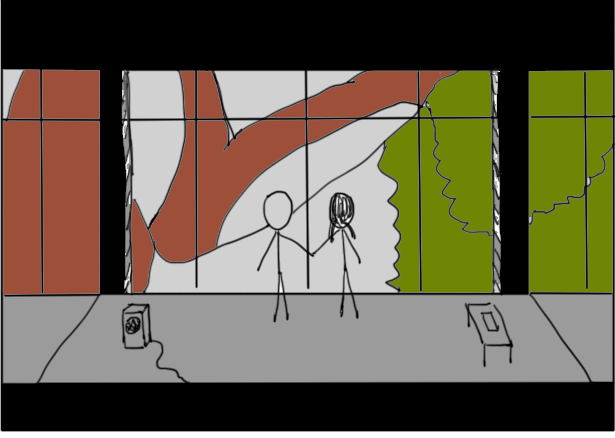

Hello World
CodeTengu Weekly 碼天狗週刊
本期 curators：
- @wancw - 熬夜是一種才能
- @vinta - I failed the Turing Test - 無法通過圖靈測試的程序員
- @fukuball - ImFukuball - 坦然一個人吃燒肉、逛超市的真大叔
 @vinta
@vinta
Python Anti-Patterns
由 QuantifiedCode 的人所寫的小手冊，列舉了很多 Python 的 anti-patterns 和 bad practices，包含正確性、可讀性、可維護性等主題，基本上是一套加強版的 coding style guideline。而 QuantifiedCode 就是一個在做 Python 程式碼質量檢測的服務。類似的服務還有 Landscape，而且 Landscape 在 GitHub 上還有 open source 針對 Django 和 Celery 的 pylint 外掛。
延伸閱讀：
Mock yourself, not your tests
這篇文章說的是：「不用什麼都 mock，你應該放膽在測試中使用（由 object factory 產生的）真實物件。」好吧，那其實就是 integration test 了。在 Python 和 Django 中比較常用的工具是 factory_boy，雖然我比較喜歡 model_mommy，用起來卡爽快。
過度 mock 的壞處是你其實在測試中做了過多的假設，從而忽略了多個元件之間是否真的能夠正常互動，而且更可能造成 "測試通過了但是你的程式實際上是壞的" 的處境。我們都會說開發環境應該要跟正式環境盡可能地一致，而你其實也應該在測試裡使用真的在正式環境裡執行的程式碼。
如果你覺得以上的言論都他媽在放屁，那你很可能是個激進的 Mock 主義者。當然 mock 還是有其優勢，例如它可以隔絕外部依賴、大幅提升測試的執行速度和強迫你把物件之間的 API 切得更乾淨。
延伸閱讀：
faker - a Python package that generates fake data for you
上一期 @fukuball 介紹了一個用來產生假資料的 PHP library，我大 Python 當然也有類似的東西可以用，因為系出同門，所以也叫 faker，而且支援繁體、簡體中文的在地化。
然後，忍不住自己提一下，如果你寫 Python，基本上所有你可能會用到的第三方 libraries 在 awesome-python 上都可以找到。
延伸閱讀：
- Mockaroo - 線上的假資料產生器，可以直接輸出 SQL / JSON / CSV / Excel 格式
- JSON Server - 可以根據一個靜態的 .json 檔案，快速生成一組活跳跳的 APIs
Elasticsearch 心得報告
由 Gogolook（就是做 Whoscall 的那家公司）的 Data Engineer 所分享的 Elasticsearch 實戰經驗，從 configuration 的優化到 indexing 的實用技巧，有用 ES 的人都可以看一下。說到這個，我當初研究 Elasticsearch 的時候是看這本書 Elasticsearch: The Definitive Guide，不過我後來才發現其實整本書的內容在 Elastic 官方網站上就看得到啊，哭哭。
延伸閱讀：
GitHub Advanced Code Search
我們都知道 GitHub 有個搜尋功能，除了可以搜尋 user 和 repo 之外，有些人可能不知道其實也能搜尋 source code 的內容。更方便的是，它可以用「程式語言」、「副檔名」或「路徑名稱」作為過濾條件。例如 "tearDown path:tests language:python" 可以找到「在 tests/ 這個目錄底下的 Python 程式碼所包含 tearDown 的內容」，這個功能在你不知道某個 method 的合適用法或是在寫 configuration 的時候尤其實用，大家感受一下。
PS. 常常在 GitHub 上看 code 的朋友，可以裝一下 Octotree 和 Avatars for Github。
延伸閱讀：
 @fukuball
@fukuball
Eigenstyle Principal Component Analysis and Fashion
主成分分析方法已經普遍使用在圖片相關應用的特徵萃取上，將圖片原本大量的資訊量降維成較少量的重要特徵，而電腦就可以用這些少量的重要特徵來做運算，比如使用在人臉辨識上。而 Eigenstyle 則是將主成分分析應用在服裝上，將從 Amazon 上抓取下來的服裝圖片萃取出重要的特徵，如此就可以用這些重要特徵來猜測使用者對服裝的喜好，甚至利用這些重要特徵隨機產生新的服裝設計！作者還將原始碼分享在 GitHub 上，有興趣的人可以去抓下來玩玩看！
延伸閱讀：
圖解機器學習
這是由 @stephaniejyee 及 @tonyhschu 所發起的一個計劃，試圖將機器學習演算法利用視覺化及淺顯的方式來呈現這門學問的精神給大眾了解。本篇文章利用視差滾動的方式，配合精準的動畫，藉由機器學習區別紐約市和舊金山市房屋的這個例子，介紹了決策樹演算法的核心思想。如各位碼農對這個計劃有興趣，也可以 follow 一下 @r2d3us！
延伸閱讀：
- Decision Trees in scikit-learn
林軒田教授 Machine Learning Foundations 第二講 學習筆記
本篇文章整理了台灣大學林軒田教授所教授的機器學習基石（Machine Learning Foundations）課程的第二講，主要內容是介紹感知學習模型演算法（Perceptrons Learning Algorithm），這個算法是一種最簡單形式的人工神經網絡算法，是一種二元線性分類器，可以用來解是非題，比如讓機器回覆是否核發信用卡這樣的問題。
延伸閱讀： 1. 機器學習基石 - PLA算法初步
6 Rules of thumb to build blazing fast web server applications
天下武功，唯快不破。如果一個網路應用程式用起來很頓，那離成功之路可能會很遙遠，各位勞苦功高的碼農們永遠記得不要考驗使用者的耐性。本篇文章列出了要創造一個妖壽快的網路應用程式需要考量的幾個要點（主要是關於後端的效能），雖然是用 PHP 來舉例，但道理可以通用在各種其他程式語言。
延伸閱讀：
- Premature optimization by Cunningham & Cunningham, Inc
- Horizontally Scaling PHP Applications: A Practical Overview by Digital Ocean
- Intuitively Showing How To Scale A Web Application Using A Coffee Shop As An Example by HighScalability
Making string concatenation readable in PHP
各位用生命在打拚的 PHP 碼農們，關於 PHP 的字串串接方式我想各位一定不陌生，也就是使用 . 這個運算子，但當要串接複雜的字串及變數時，如果沒有好好思考一下撰寫的方式，很容易就會寫出讓自己眼睛脫窗流血的程式碼，我們在 Issue #4 的 Writing highly readable code 曾經說過一個想要從低階碼農晉升到高階碼農的碼農朋友們的首要之務就是要讓寫出來的 Code 可以讓其他碼農朋友們也可以容易讀懂，好好琢磨一下字串的串接語法也是一個好的開始。
延伸閱讀：
- sprintf in PHP
 @wancw
@wancw
How to undo (almost) anything with Git
人總是有手賤、犯蠢的時候，還好有 Git 這個好物讓你能彌補不小心犯下的錯。（可惜還是沒辦法避免偷看路上的正妹被女友抓到時的窘境）
GitHub 這篇文章列出常見狀況的補救措施，不過是復原已經 push 出去的修改、更動本地的修改等等……。特別是 git reflog 這個好東西。絕對要學起來，以後你會感謝你自己的。
別忘了溫習一下 Issue #2 的 How to Write a Git Commit Message
Functional Reactive Programming Introduction for PLSM
在大家受不了 Node.js 的 callback 地獄之後，Promise 或是 Reactive Programming 這類東西變成一股新的潮流。Promise 其實就是把 callback 的程式碼結構拉直，寫起來比較好看也有彈性。（好啦，這樣有點太小看它了）Reactive Programming 就比較玄一點，有點像 Observer pattern、但又不太一樣；更別說還有 Functional Reactive Programming。
這份投影片介紹了 Functional Reactive Programming 以及一點（non-functional） Reactive Programming 還有他們差異。光看投影片可能有點難懂，請搭配 Functional Thursday 的影片 —— FRP Introduction for PLSM一起觀看。
註：接下來的趨勢應該就是 async/await 了，JavaScript（ES7）、Python 3.5 都已經把它納入標準了。而 JavaScript 在這條路上的演化可以參考 The long road to Async/Await in JavaScript。
JavaScript Promise 迷你书（中文版）
在 async/await 還沒來到、Reactive Programming 還沒摸透之前，先來看看 Promise 吧。這本迷你書涵括 Promise 的概念、基本用法到測試等進階應用，是入門者必備的參考資料。
[Android] 善用 Gradle 建立安全的 keystore 設定
密碼或是任何機密資訊都不應該放在 source code repository 裡面（註），但是你絕對不會想要每次 build 要上架的 APK 都手動輸入 key store 跟 key 的密碼。這篇文章給你清楚、簡單的範例教你解決這個兩難問題。
註：這是常識對吧？對吧？！
公司強迫離職但不願意資遣 - 對抗全紀錄
提升技術能力之外懂得如何捍衛自己的權利也很重要，畢竟台灣滿滿的慣老闆。
公司不肯資遣、用手段逼你離職時的應對方法：
- 申請調解，寄出存證信函終止勞動契約
- 調解 → 申請離職證明 → 申請失業給付
- 向法扶會申請協助 → 上法院
Random Cool Stuff

Dreamsome - 有詩意的程序員諷刺漫畫
這個網站收錄了很多理工科或軟體工程師看了會會心一笑的極短篇漫畫，作者是一個在阿里巴巴工作的程序員。雖然沒有 xkcd 那麼深邃（畢竟 xkcd 的作者 Randall Munroe 根本就是個天才），但是仍舊相當有趣，其中我最喜歡的是這一篇「奇怪的时刻」，在向鬥陣俱樂部（Fight Club）致敬的同時又抖了一個絕妙的包袱。
如果你喜歡這種風格的漫畫，我推薦你也可以看看「塔希里亚故事集」。
由 @vinta 分享